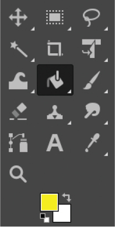

13
Creating Graphics for the Mr. Stick Man Game

It’s a good idea to develop a plan when creating a game (or any program). Your plan should include a description of what the game is about, as well as major elements and characters. When it’s time to start programming, your description will help keep you focused on what you are trying to develop. Your game might not turn out exactly like the original description—this is to be expected! In this chapter, we’ll begin developing a fun game called Mr. Stick Man Races for the Exit .
Mr. Stick Man Game Plan
Here’s the description of our new game:
- Secret agent Mr. Stick Man is trapped in the lair of Dr. Innocuous; you must help him escape through the exit on the top floor.
- There is a stick figure that can run from left to right and jump up. Each floor has platforms that he must jump to.
- The goal is to reach the door to the exit before the game ends.
Based on this description, we’ll need several images for Mr. Stick Man, the platforms, and the door. We’ll write code to pull all this together, but before we get there, we’ll create the graphics for our game. That way, we’ll have something to work with in the next chapter.
We could draw these elements using graphics like our Bounce! game, but those are a bit too simple. Instead, we’re going to create sprites.
Sprites are the moving objects in a game—typically a character of some kind. Sprites are usually pre-rendered , meaning they’re drawn in advance (before the program runs) rather than created by the program itself using polygons, as in our Bounce! game. In this game, Mr. Stick Man, the platforms, and the door will be sprites. To create these images, we’ll need to install a graphics program.
Getting GIMP
There are several graphics programs available, but for this game, we need one that supports transparency (sometimes called the alpha channel ), which lets images have sections where no colors are drawn on the screen. We need images with transparent parts because when one image passes over or near another as it moves across the screen, we don’t want the background of one image to wipe out part of another. For example, in Figure 13-1 , the checkerboard pattern in the background represents the transparent area.
Figure 13-1: Transparent background in GIMP
If we copy the entire image and paste it over the top of another image (also called overlaying ), the background won’t wipe anything out. This is shown in Figure 13-2 .

Figure 13-2: Overlaying images
GIMP ( http://www.gimp.org ), short for GNU Image Manipulation Program , is a free graphics program for Linux, macOS, and Windows that supports transparent images. Download and install it as follows.
- If you’re using Windows or macOS, you’ll find installers on the GIMP project page at https://www.gimp.org/downloads/ .
- If you’re using Ubuntu, install GIMP by opening the Ubuntu Software Center and entering gimp in the search box. Click the Install button for the “GNU Image Manipulation Program” when it appears in the results.
-
If you’re using Raspberry Pi, it’s easiest to install GIMP by using the command line. Open a Terminal and enter the following command to install (this also works on Ubuntu):
sudo apt install gimp
You should also create a folder for your game. To do so, right-click your desktop anywhere there is empty space and select New ▸ Folder (on Ubuntu, the option is Create New Folder ; on macOS, it’s New Folder ). Enter stickman as the folder name.
Creating the Game Elements
Once you’ve installed your graphics program, you’re ready to draw. We’ll create these images for our game elements:
- Images for a stick figure that can run left and right and jump
- Images for the platform, in three different sizes
- Images for the door: one open and one closed
- An image for the game’s background (because a plain white or gray background makes for a boring game)
Before we start drawing, we need to prepare our images with transparent backgrounds.
Preparing a Transparent Image
To set up an image with transparency, start GIMP and follow these steps:
- Select File ▸ New .
- In the dialog, enter 27 pixels for the image width and 30 pixels for its height.
- Select Layer ▸ Transparency ▸ Add Alpha Channel .
- Select Select ▸ All .
- Select Edit ▸ Cut .
The end result should be an image filled with a checkerboard of dark gray and light gray, as shown in Figure 13-3 (zoomed in).
Figure 13-3: Zooming in on the transparent background
Now we can begin creating our secret agent: Mr. Stick Man.
Drawing Mr. Stick Man
To draw our first stick figure image, click the Paintbrush tool in the GIMP Toolbox, and then select the brush that looks like a small dot in the Brushes toolbar (called Pixel ), as shown in Figure 13-4 .

Figure 13-4: GIMP Toolbox
We’ll draw three different images (or frames ) for our stick figure to show him running and jumping to the right. We’ll use these frames to animate Mr. Stick Man, as we did for the animation in Chapter 10 .
If you zoom in to look at these images, they might look like Figure 13-5 .

Figure 13-5: Zooming in on the stick figure
Your images don’t need to look exactly the same, but they should have the stick figure in three different positions of movement. Each image should be 27 pixels wide by 30 pixels tall.
Mr. Stick Man Running to the Right
First, we’ll draw a sequence of frames for Mr. Stick Man running to the right. Create the first image as follows:
- Draw the first image (the leftmost image shown in Figure 13-5 ).
- Select File ▸ Save As .
- In the dialog, enter figure-R1.gif for the name. Then click the small plus (+) button labeled Select File Type .
- Select GIF image in the list that appears.
- Save the file to the stickman folder you created earlier (click Browse for Other Folders to find the correct folder).
Follow the same steps to create a new 27 by 30 pixel image for the next Mr. Stick Man in Figure 13-5 . Save this image as figure-R2.gif . Repeat the process for the final image, and save it as figure-R3.gif .

Mr. Stick Man Running to the Left
Rather than re-creating our drawings for the stick figure moving to the left, we can use GIMP to flip our frames of Mr. Stick Man moving to the right.
In GIMP, open each image in sequence, and then select Tools ▸ Transform Tools ▸ Flip . When you click the image, you should see it flip from side to side, as in Figure 13-6 . Save the images as figure-L1.gif , figure-L2.gif , and figure-L3.gif .
Figure 13-6: Flipped stick figure
Now we’ve created six images for Mr. Stick Man, but we still need images for the platforms, the door, and the background.
Drawing the Platforms
We’ll create three platforms in different sizes: 100 pixels wide by 10 pixels tall; 66 pixels wide by 10 pixels tall; and 32 pixels wide by 10 pixels tall. You can draw the platforms any way you like, but make sure their backgrounds are transparent, as with the stick figure images.

Figure 13-7 shows what the platforms might look like when we zoom in.

Figure 13-7: Zooming in on the platforms
As with the stick figure images, save these in the stickman folder. Call the largest platform platform1.gif , the middle-sized one platform2.gif , and the smallest platform3.gif .
Drawing the Door
The size of the door should be proportional to the size of Mr. Stick Man (27 pixels wide by 30 pixels tall). We’ll need two images: one for the closed door and another for the open door. The doors might look like Figure 13-8 (zoomed in).
Figure 13-8: Zooming in on the doors
To create these images, follow these steps:
- Click the foreground color box (at the bottom of the GIMP Toolbox) to display the color picker.
- Select the color you want for your door. Figure 13-9 shows an example with yellow selected.
-
Choose the Bucket tool (shown selected in the Toolbox), and fill the screen with the color you chose.

Figure 13-9: GIMP showing the background color selector
- Change the foreground color to black.
- Choose either the Pencil or Paintbrush tool (both are found to the right of the Bucket tool), and draw the black outline of the door and the doorknob.
- Save these in the stickman folder and call them door1.gif and door2.gif .
Drawing the Background
The final image we need to create is the background. We’ll make this image 100 pixels wide by 100 pixels tall. It does not need a transparent background because we’ll fill it with a single color that will be the background “wallpaper” behind all the other elements of the game.
To create the background, select File ▸ New and enter the image size as 100 pixels wide and 100 pixels tall. Choose a suitably evil color for the wallpaper of a villain’s lair. I chose a darker shade of pink.
You can dress up your wallpaper with flowers, stripes, stars—whatever you like for your game. For example, to add stars to the wallpaper, choose another color, select the Pencil tool, and draw your first star. Then use the Selection tool to select a box around the star, and copy and paste it around the image (select Edit ▸ Copy , and then Edit ▸ Paste ). You should be able to drag the pasted image around the screen by clicking it. Figure 13-10 shows an example with some stars, and the Selection tool selected in the Toolbox.
Figure 13-10: GIMP selection tool
Once you’re happy with your drawing, save the image as background.gif in the stickman folder.
Transparency
With our graphics created, you can get a better idea of why our images (other than the background) need transparency. If we placed Mr. Stick Man in front of our background wallpaper and he didn’t have a transparent background, our game would look like Figure 13-11 .

Figure 13-11: Stick figure with no transparency
The white background of Mr. Stick Man wipes out part of the wallpaper. If we use our transparent image, we get Figure 13-12 .
Figure 13-12: Stick figure with transparency
Nothing in the background is obscured by the stick figure image, except for whatever he covers himself. That’s much more professional!
What You Learned
In this chapter, you learned how to write a basic plan for a game and figured out where to begin. Because we need graphical elements before we can make a game, we used a graphics program to create basic frames. In the process, you learned how to make the backgrounds of these images transparent so they don’t cover up other images on the screen.

In the next chapter, we’ll create some of the classes for our game.